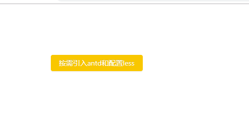

在creat-react-app搭建的项目环境中按需引入antd以及配置less,首先需要暴露出来webpack文件。(此操作不可逆)。
create-react-app myapp 创建同一个react项目
yarn add antd less less-loader babel-plugin-import 需要配置的 less 和 babel依赖
暴露wenpack文件的指令是yarn eject. 在使用这个指令之前要先推送一次git文件才行。或者删除git文件。
提交git :
git add .
git commit -m 'xxxx'
git push
然后再yarn eject
运行之后会询问是否暴露，输入y即可。
此时在项目目录下会多出一个config文件夹。，
当你运行项目的时候你会发现报错 ： 缺少@babel/plugin-syntax-jsx文件
//执行命令
yarn add @babel/plugin-syntax-jsx
然后在config文件夹里面找webpack.config.js文件在大概345行处添加代码
['import',{libraryName:'antd', style:true}],
在大概455行处添加代码
{
test: /\.less$/,
use: [{
loader: "style-loader"
}, {
loader: "css-loader"
}, {
loader: "less-loader",
options: {
sourceMap: true,
modifyVars: {
'@primary-color': '#f9c700', //修改antd主题色
},
javascriptEnabled: true,
}
}]
},
然后重启项目，就可以按需引入antd、引入less文件了。并且主题色也变为了修改的#f9c700色。
引入一个Button按钮来举个例子:
App.js文件:
import React from 'react';
import { Button } from 'antd'
import './app.less'
function App() {
return (
<div>
<Button className="button" type="primary">按需引入antd和配置less</Button>
</div>
);
}
export default App;
app.less文件:
1 .button{
2 margin: 100px;
3 }
效果图:
